BU Mars Rover Club
Engineer & Team Lead, Sep 2023 - May 2025
Project Description
BU Mars Rover Club is a student engineering team that designs and builds a rover for the University Rover Challenge. I contributed across robotics, electrical systems, embedded systems, and software while also growing into leadership roles on the electrical team.
This experience was especially meaningful because it combined long-term team leadership with hands-on technical work. I moved from technical contributor roles in robotics and electrical work to Electrical Deputy Lead and then Electrical Lead, helping guide both the system direction and the day-to-day execution.
My Responsibilities
- Oversaw power systems, computer networking, and embedded systems tasks as Electrical Lead and Electrical Deputy Lead.
- Taught embedded systems and electrical skills, assigned tasks, and reinforced lab safety practices.
- Managed budgets and timelines, coordinated with other subteams, and reported updates during E-board meetings.
- Wrote the electrical sections for Preliminary Design Review and System Acceptance Review documents.
- Researched Dynamixel servos, encoder control with NVIDIA Jetson, and GPS integration through a ROS2 node.
- Wired the rover power regulation system, conducted electrical load testing, and designed arm components including grippers and protective casings.
Skills I Learned
- Technical leadership for a multidisciplinary robotics team.
- Embedded systems mentoring, safety culture, and project planning.
- Power systems wiring, electrical load testing, and hardware integration.
- ROS2, motor control research, CAD iteration, and robotics prototyping.
Project Links
Photos
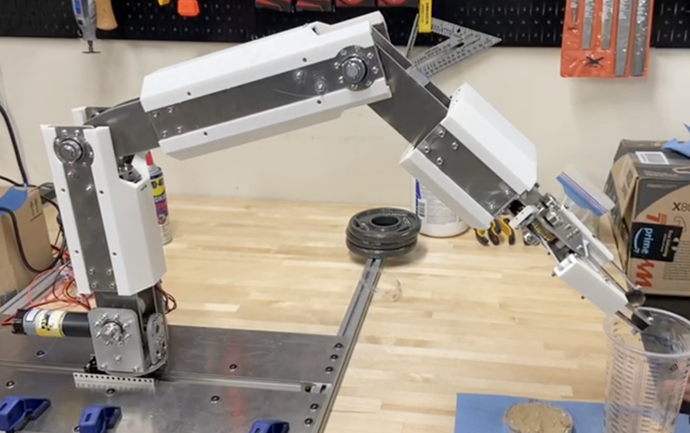
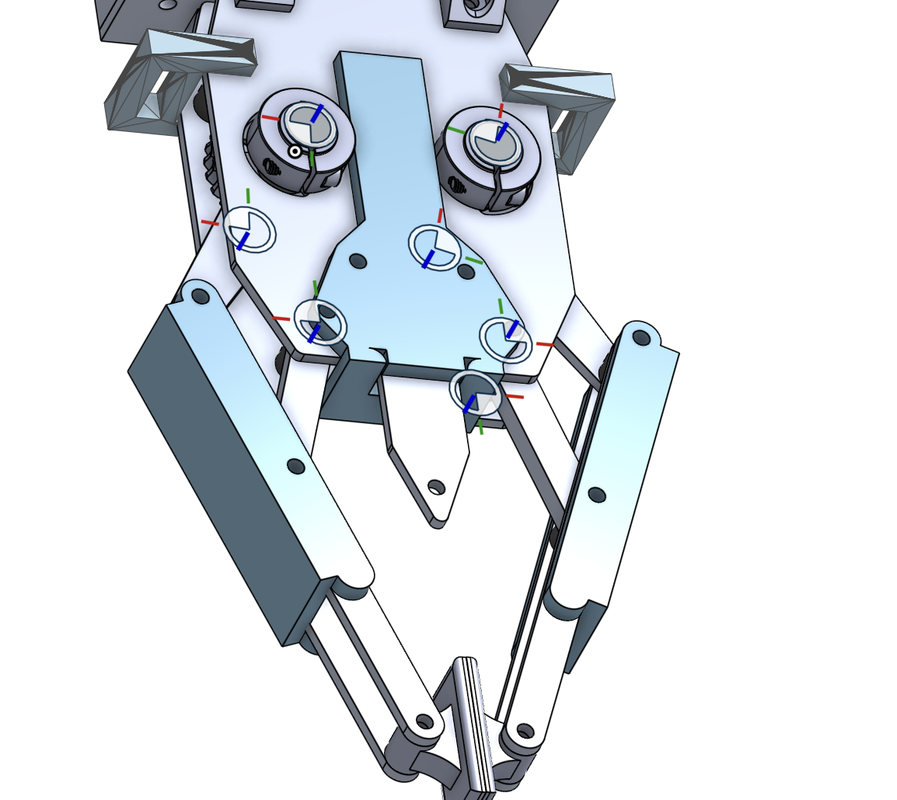
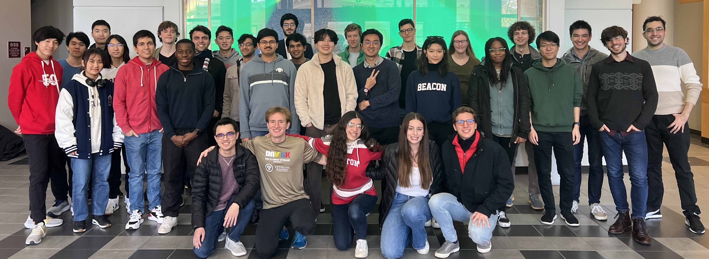
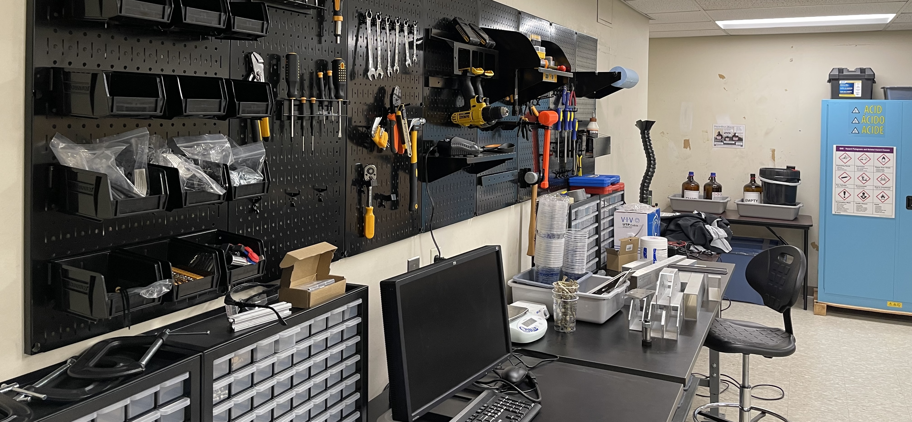
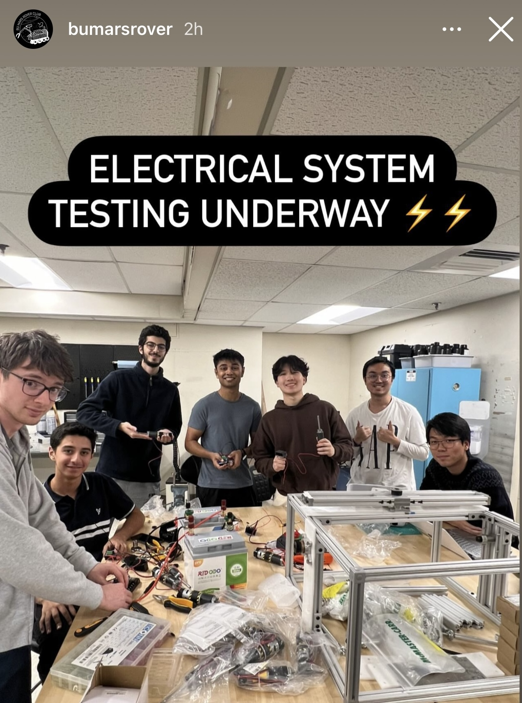


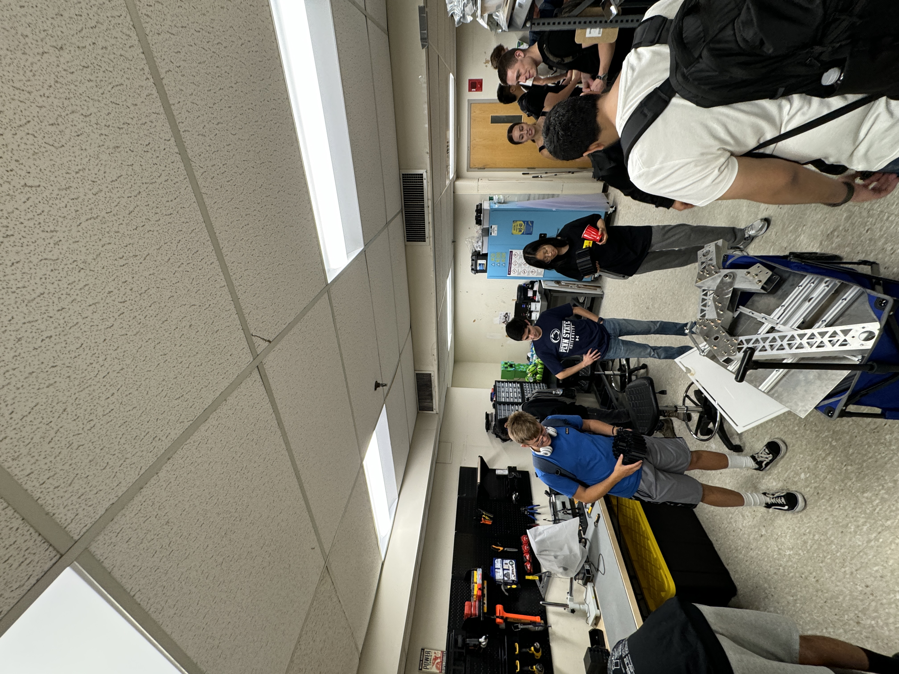
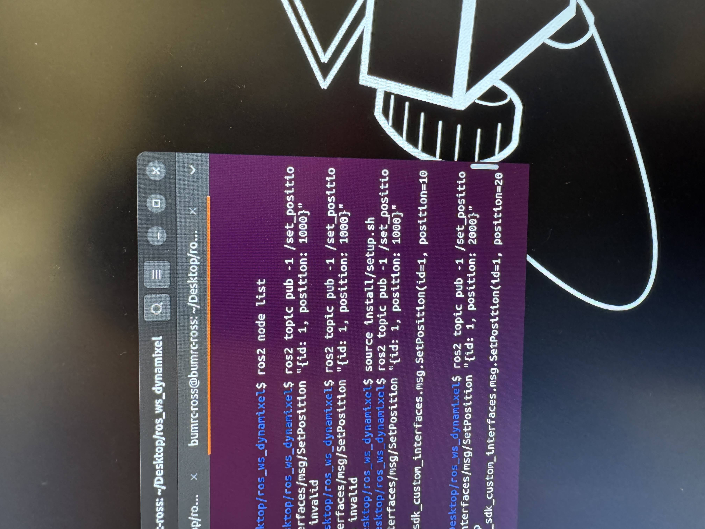
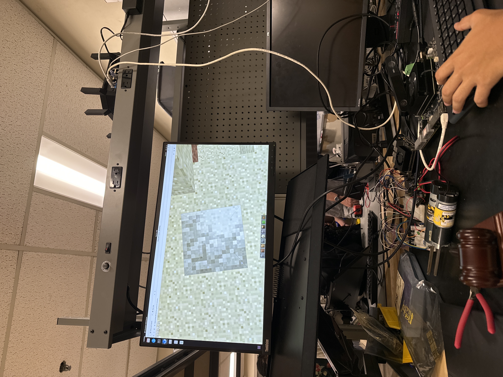

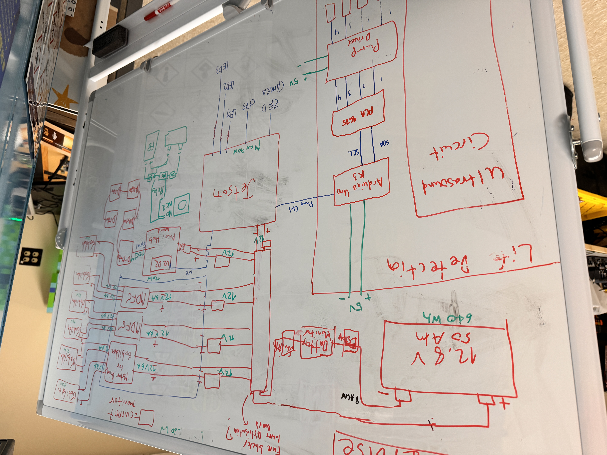
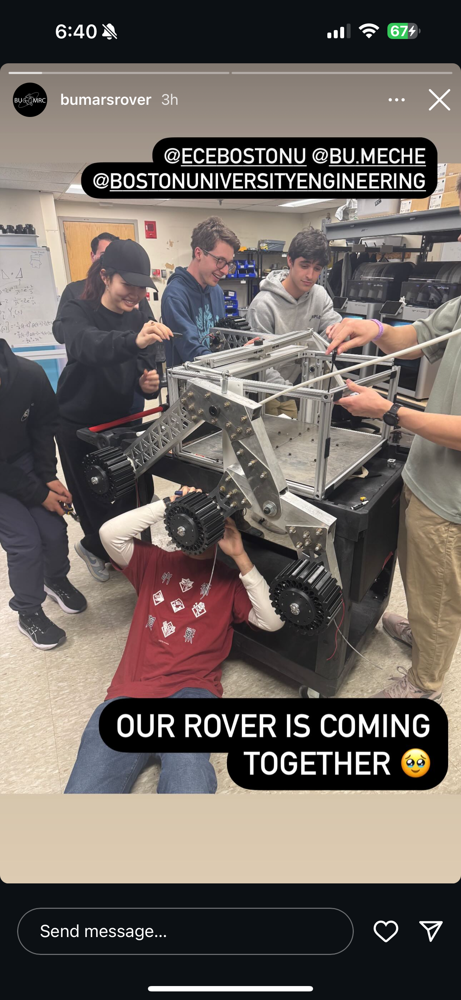
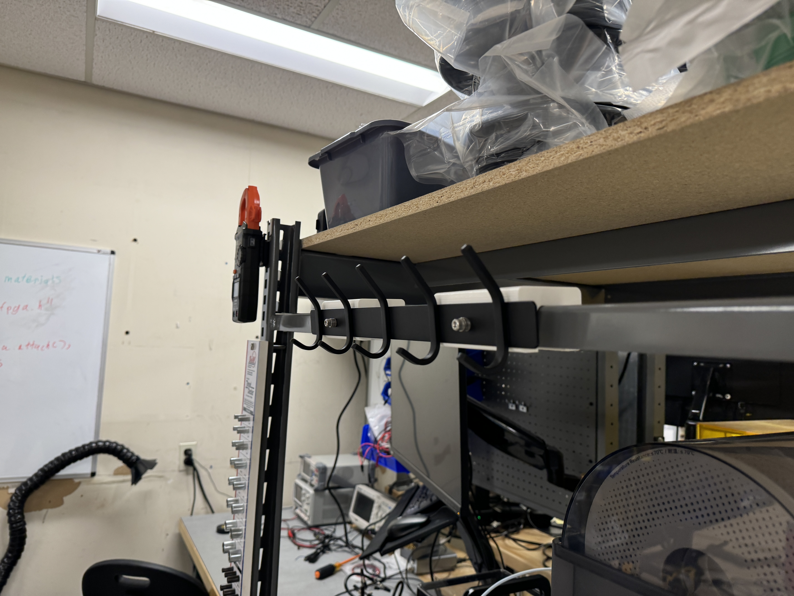